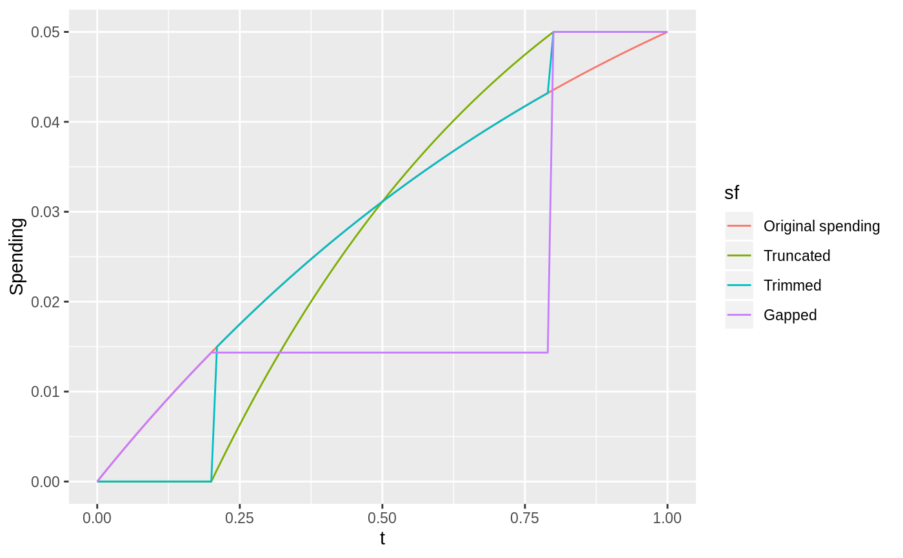

sfSpecial.RdThe functions sfTruncated() and sfTrimmed apply any other
spending function over a restricted range. This allows eliminating spending
for early interim analyses when you desire not to stop for the bound being
specified; this is usually applied to eliminate early tests for a positive
efficacy finding. The truncation can come late in the trial if you desire to
stop a trial any time after, say, 90 percent of information is available and
an analysis is performed. This allows full Type I error spending if the
final analysis occurs early. Both functions set cumulative spending to 0
below a 'spending interval' in the interval [0,1], and set cumulative
spending to 1 above this range. sfTrimmed() otherwise does not change
an input spending function that is specified; probably the preferred and
more intuitive method in most cases. sfTruncated() resets the time
scale on which the input spending function is computed to the 'spending
interval.'
sfGapped() allows elimination of analyses after some time point in
the trial; see details and examples.
sfTrimmed simply computes the value of the input spending function
and parameters in the sub-range of [0,1], sets spending to 0 below this
range and sets spending to 1 above this range.
sfGapped spends outside of the range provided in trange. Below
trange, the input spending function is used. Above trange, full spending is
used; i.e., the first analysis performed above the interval in trange is the
final analysis. As long as the input spending function is strictly
increasing, this means that the first interim in the interval trange is the
final interim analysis for the bound being specified.
sfTruncated compresses spending into a sub-range of [0,1]. The
parameter param$trange specifies the range over which spending is to
occur. Within this range, spending is spent according to the spending
function specified in param$sf along with the corresponding spending
function parameter(s) in param$param. See example using
sfLinear that spends uniformly over specified range.
sfTruncated(alpha, t, param) sfTrimmed(alpha, t, param) sfGapped(alpha, t, param)
| alpha | Real value \(> 0\) and no more than 1. Normally,
|
|---|---|
| t | A vector of points with increasing values from 0 to 1, inclusive. Values of the proportion of sample size or information for which the spending function will be computed. |
| param | a list containing the elements sf (a spendfn object such as sfHSD), trange (the range over which the spending function increases from 0 to 1; 0 <= trange[1]<trange[2] <=1; for sfGapped, trange[1] must be > 0), and param (null for a spending function with no parameters or a scalar or vector of parameters needed to fully specify the spending function in sf). |
An object of type spendfn. See Spending_Function_Overview
for further details.
The manual is not linked to this help file, but is available in library/gsdesign/doc/gsDesignManual.pdf in the directory where R is installed.
Jennison C and Turnbull BW (2000), Group Sequential Methods with Applications to Clinical Trials. Boca Raton: Chapman and Hall.
# Eliminate efficacy spending forany interim at or before 20 percent of information. # Complete spending at first interim at or after 80 percent of information. tx <- (0:100) / 100 s <- sfHSD(alpha = .05, t = tx, param = 1)$spend x <- data.frame(t = tx, Spending = s, sf = "Original spending") param <- list(trange = c(.2, .8), sf = sfHSD, param = 1) s <- sfTruncated(alpha = .05, t = tx, param = param)$spend x <- rbind(x, data.frame(t = tx, Spending = s, sf = "Truncated")) s <- sfTrimmed(alpha = .05, t = tx, param = param)$spend x <- rbind(x, data.frame(t = tx, Spending = s, sf = "Trimmed")) s <- sfGapped(alpha = .05, t = tx, param = param)$spend x <- rbind(x, data.frame(t = tx, Spending = s, sf = "Gapped")) ggplot2::ggplot(x, ggplot2::aes(x = t, y = Spending, col = sf)) + ggplot2::geom_line()# now apply the sfTrimmed version in gsDesign # initially, eliminate the early efficacy analysis # note: final spend must occur at > next to last interim x <- gsDesign( k = 4, n.fix = 100, sfu = sfTrimmed, sfupar = list(sf = sfHSD, param = 1, trange = c(.3, .9)) ) # first upper bound=20 means no testing there gsBoundSummary(x)#> Analysis Value Efficacy Futility #> IA 1: 25% Z 20.0000 -0.5316 #> N: 31 p (1-sided) 0.0000 0.7025 #> ~delta at bound 11.1795 -0.2972 #> P(Cross) if delta=0 0.0000 0.2975 #> P(Cross) if delta=1 0.0000 0.0102 #> IA 2: 50% Z 2.1555 0.4956 #> N: 61 p (1-sided) 0.0156 0.3101 #> ~delta at bound 0.8520 0.1959 #> P(Cross) if delta=0 0.0155 0.7033 #> P(Cross) if delta=1 0.6458 0.0269 #> IA 3: 75% Z 2.3061 1.3812 #> N: 92 p (1-sided) 0.0106 0.0836 #> ~delta at bound 0.7442 0.4457 #> P(Cross) if delta=0 0.0208 0.9208 #> P(Cross) if delta=1 0.8136 0.0545 #> Final Z 2.3352 2.3352 #> N: 122 p (1-sided) 0.0098 0.0098 #> ~delta at bound 0.6527 0.6527 #> P(Cross) if delta=0 0.0242 0.9758 #> P(Cross) if delta=1 0.9000 0.1000# now, do not eliminate early efficacy analysis param <- list(sf = sfHSD, param = 1, trange = c(0, .9)) x <- gsDesign(k = 4, n.fix = 100, sfu = sfTrimmed, sfupar = param) # The above means if final analysis is done a little early, all spending can occur # Suppose we set calendar date for final analysis based on # estimated full information, but come up with only 97 pct of plan xA <- gsDesign( k = x$k, n.fix = 100, n.I = c(x$n.I[1:3], .97 * x$n.I[4]), test.type = x$test.type, maxn.IPlan = x$n.I[x$k], sfu = sfTrimmed, sfupar = param ) # now accelerate without the trimmed spending function xNT <- gsDesign( k = x$k, n.fix = 100, n.I = c(x$n.I[1:3], .97 * x$n.I[4]), test.type = x$test.type, maxn.IPlan = x$n.I[x$k], sfu = sfHSD, sfupar = 1 ) # Check last bound if analysis done at early time x$upper$bound[4]#> [1] 2.357469# Now look at last bound if done at early time with trimmed spending function # that allows capture of full alpha xA$upper$bound[4]#> [1] 2.343624# With original spending function, we don't get full alpha and therefore have # unnecessarily stringent bound at final analysis xNT$upper$bound[4]#> [1] 2.37218# note that if the last analysis is LATE, all 3 approaches should give the same # final bound that has a little larger z-value xlate <- gsDesign( k = x$k, n.fix = 100, n.I = c(x$n.I[1:3], 1.25 * x$n.I[4]), test.type = x$test.type, maxn.IPlan = x$n.I[x$k], sfu = sfHSD, sfupar = 1 ) xlate$upper$bound[4]#> [1] 2.435171